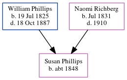

Susan Caroline Phillips c1848 -
[ Home ] | [ Calendar ] | [ Surnames Index ] | [ Census Index ] | [ Family History ]The child of William Phillips (a virginia phillips said that he was a carpenter and contractor. he built grady hospital in atlanta. he also worked on the masonic temple in atlanta. the 1850 census confirms he was a carpenter) and Naomi Richberg, Susan Phillips, the great-great-aunt of Michele Copp (née Phillips), was born in South Carolina c. 18481,2.
During her life, she was living in Sumterville, Sumter, South Carolina in 18501; and in Sumter, Sumter, South Carolina in 18602.
Parents
- William Hiram was born on Jul 19, 1825
- Naomi C was born in Jul 1831
Citations
- 1850 United States Federal Census Online publication - Provo, UT, USA: The Generations Network, Inc., 2005.Original data - United States of America, Bureau of the Census. Seventh Census of the United States, 1850. Washington, D.C.: National Archives and Records Administration, 1850. M432,
- 1860 United States Federal Census Online publication - Provo, UT, USA: The Generations Network, Inc., 2004.Original data - United States of America, Bureau of the Census. Eighth Census of the United States, 1860. Washington, D.C.: National Archives and Records Administration, 1860. M653, 1
Family Tree
Generated by ged2site. Last updated on Jun 6, 2024